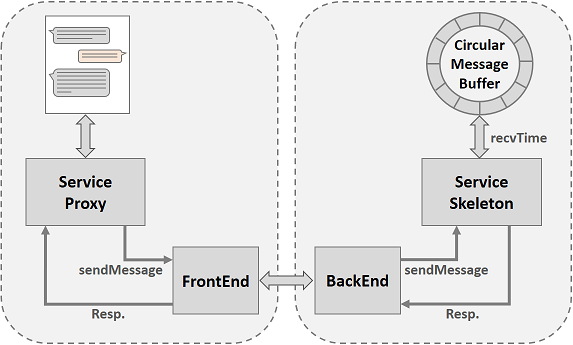
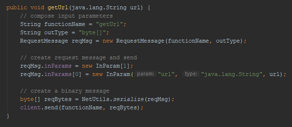

App For Android RMI Architecture
Intro
This application based on my Android RMI research, it provides the communications over device-to-device network without Internet or central routers.
Based on the group-to-group feature of the Android RMI, the connections can reach over the limit distance of standard network interfaces such as Bluetooth or WiFi-Direct.
This app utilizes the Anroid RMI to provide two basic modules, chat and web browsing.
The more modules such as file sending, telephone etc. will be updated in the near future.
This article will describe in detail the technologies that I used to adopt the library and develop the modules.
Network Detection
I updated a bit the UI from the experimental apps and create the following layout. This allows user to connect via both WiFi and WiFi-Direct interfaces.

Chat App
Chat app simply sends messages between the devices.
I wrap each message by a UserMessage object, each contains message, user (userId and userName) and createAt (time).
I designed the sendMessage method as follows
- The client sends a new message to
BackEndwith a timestamp BackEndfirstly stores the new message inside aMessage Circular Buffer- Then
BackEndsearch for the messages that newer than therecvTime. This searching process takesO(n)time because the newest messages are always at the front of the buffer - The
sendMessagemethod returns the list of newest messages
The architecture of this application is very simple. All that developer has to do is defining the sendMessage method as described above.

When the developer compiles the code, the compiler will automatically generate the following FrontEnd (for the client) and BackEnd (for the host).
Here is the final result
Remote Browser App
For this application, I define a method to download content from an URL as follows. I used OkHttp library to simplify the network stuff.
For displaying contents, I used Android WebView component. WebView will help to load a HTML link and all inner links inside the page recursively. To interfere this loading process, I used NanoHttpD as a Local Web Server. Instead of letting the
WebView load the original URL, I let it load the updated URL which navigate the request to the NanoHttpD local server.
On the BackEnd side, it will receive the original URL, load the actual content using WiFi network, and return the result back to the client.
When the developer compiles the code, the compiler will automatically generate the following FrontEnd (for the client) and BackEnd (for the host).

Here is the final result